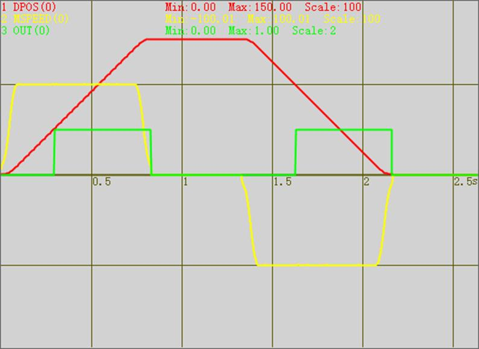

|
类型 |
轴参数 |
|
描述 |
MOVE_OP提前一定毫秒单位时间输出, 缺省0不生效, 设置正数会比缺省输出位置提前, 设置负数则延后. !这个效果同MOVEOP_ADIST, MOVE_OP后自动清零, 不建议使用延后. !输出点时刻匀速运动, 或正在减速时效果更好, 否则可能不准. !提前时间长度不建议超过减速时间. !如果延后, 只支持匀速运动, 建议使用MOVEOP_DELAY, 效果更好. !不建议与MOVEOP_ADIST同时设置. |
|
语法 |
MOVEOP_AHEADMS = timesms timesms: 时间,单位ms |
|
适用控制器 |
4系列以上控制器, version_build: 20241125以后固件支持 |
|
例子 |
BASE(0) ATYPE=1 UNITS=100 DPOS=0 MPOS=0 SPEED=100 ACCEL=1000 DECEL=1000 MERGE=1 AXIS_ZSET(0) = 19 SRAMP=100 DELAY(500) TRIGGER MOVE(50) MOVEOP_AHEADMS = -10 MOVE_OP(0,1) MOVE(50) MOVE(50) MOVEOP_AHEADMS = 10 '单位ms MOVE_OP(0,0) MOVE_DELAY(1000) MOVE(-50) MOVEOP_AHEADMS = -10 MOVE_OP(0,1) MOVE(-50) MOVE(-50) MOVEOP_AHEADMS = 10 '单位ms MOVE_OP(0,0) MOVE_DELAY(1000)
运动曲线 MSPEED(0)垂直刻度100 DPOS(0)垂直刻度100 OP(0)垂直刻度2  |
|
相关指令 |